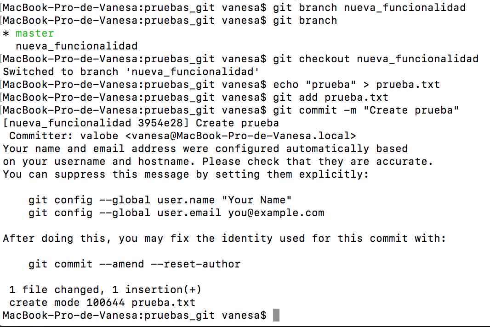

GIT
Workshop R Team
Introduction, Staging area & remote, cloning & branching and collaboration
¿Qué es Git?
Sistema de control de versiones distribuido (DVCS)
Opuesto al enfoque de cliente-servidor de los sistemas centralizados. --En lugar de un único repositorio central en el cual los clientes se sincronizan, cada usuario tiene en local una copia completa en su equipo y esta copia es también un repositorio completo.
Las operaciones típicas como commit, visualización del historial de cambios, etc son muy rápidas ya que no es necesaria comunicación con el servidor.
--La comunicación con el servidor remoto solo se realizar cuando se comparten los cambios
Central repository vs Distributed repository
¿Cúal es el origen de Git?
Git se origina en el desarrollo del kernel de Linux
Fundado en 2005 por Linus Torvalds
working with git
Línea de comandos o multitud de herramientras gráficas.
git help: Muestra una lista con los comandos más utilizados.
git help
Si queremos ver todos los comandos disponibles podeos utilizar la opción --all o -a.
Si lo utilizamos junto con un comando git concreto muestra la página de manual para ese comando.
Create a new repository with git init
Utiliza el comando git init para crear un nuevo repositorio en el directorio actual.
Todo repositorio git está almacenado en la caprtea .git del directorio donde se ha creado el repositorio. Este directorio contiene el historial completo del respositorio.
git config
Configuración global: Git permite almacenar configuración del usuario en el fichero .gitconfig ubicado en home del usuario.
El fichero ubicado en .git/config almacena la configurción específica de un repositorio.
Working tree
Todos los ficheros situados dentro del directorio del repositorio, excluyendo la carpeta .git, constituyen lo que se denomina working tree
Un fichero en el working tree puede tener diferentes estados:
- tracked
- untracked
- staged
- unstaged
git status
Permite ver los cambios realizados en el repositorio
git add & git commit
git add almacena una instantánea de los ficheros especificados en el staging area.
git commit hace permanentes los cambios del staging area en el repositorio.
git log
git diff
Permite ver los cambios realizados desde el último commit.

git diff --staged
Permite ver los cambios realizados con respecto a lo último que se añadió al stagging area
unstaging
Descartar cambios
Stage & commit
Con la opción -a realizamos tanto el add como el commit
Solo añade los cambios de los ficheros que ya estaban bajo tracking
Deshacer un commit con git reset
Mueve el head al commit anterior y devuelve los cambios al stagging area.
Añadir algo más a un commit
Con la opción --amend añadimos los cambios (todo lo que se encuentre en el stagging area) al último commit.
Deshacer commit y todos los cambios con git reset
Mediande la opción --hard podemos deshacer el último o los dos últimos commits y también todos los cambios.
Repositorio Remoto: git remote and git push
Repositorio Remoto: otros comandos
git pull para traer a local los cambios
tip: A veces cuando vamos a hacer pull tenemos cambios que no queremos commitear todavía. podemos hacer 'git stash' para ocultar los cambios y 'git stash apply' para volver a aplicar los cambios tras el pull.
'git remote rm name' para eliminar un repositorio remoto
'git push -u name branch' para subir una rama a remoto
Clonado de un repositorio remoto: git clone
git clone
- Descarga el repositorio completo en un nuevo repositorio
- Añade el origen remoto apuntando a la URL de clonado.
- Checkout de la rama inicial (master).< /li>
Trabajo con ramas: git branch and git checkout
Desarrollo de nuevas funcionalidades en ramas creadas desde la rama master
'git checkout -b newbranch' Crea y se mueve a la nueva rama
git Merge
git crea un merge-commit
Fast-forward merge vs non fast-forward merge

'git branch -d branch' Para eliminar un rama
Trabajo en grupo
Para esta parte vamos a necesitar otro usuario que realice cambios (usuario2)
Ejercicio 1: Commits diferentes
- git clone https://github.com/valobe/pruebasGit.git
- usuario2 añade un fichero nuevo, hace commit y hace push
- usuario1 añade un fichero nuevo y hace commit
- usuario1 intenta hacer push ¿qué ocurre?
Observamos que nos indica que nuestra rama está por detrás y no podemos hacer el push.
La solución es hacer un pull para hacer un merge del origin/master en nuestro master
git pull
- Sincroniza nuestro repositorio local con el remoto == 'git fetch'
- Hace el merge del origin/master con el master (crea un merge commit) == 'git merge origin/master'
- A continuación el usuario1 puede hacer 'git push' para actualizar el repositorio remoto
Ejercicio 2: Merge conflict
- usuario1 modifica el fichero prueba.txt y hace commit/li>
- usuario2 modifica el fichero prueba.txt, hace commit y push
- usuario1 intenta hacer pull ¿qué ocurre?
Observamos que nos indica que se ha producido un merge conflict y qeu debemos solucionarlo y commitear el resultado.
- Si el usuario1 hace git status verá que el fihcero prueba.txt tiene cambios
- El usuario1 abre el fichero prueba.txt para editarlo y corregirlo
- El usuario1 añade y commitea el fichero prueba.txt y pone mensaje de merge commit
- El usuario1 ahora puede hacer push para actualizar el remoto
https://git-scm.com/